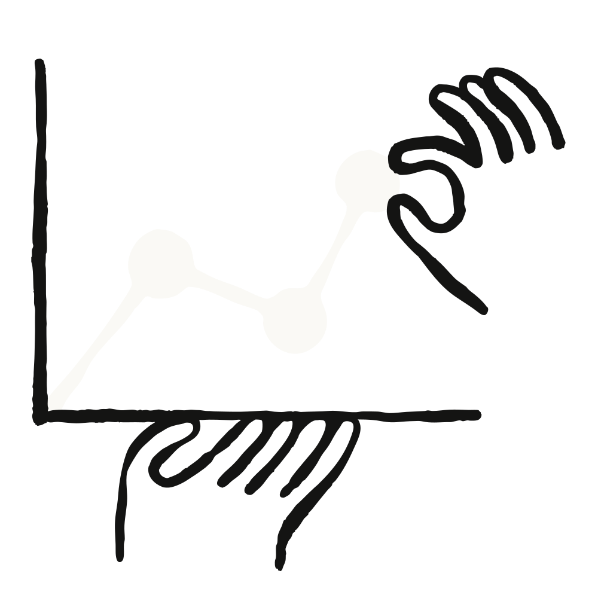

CodeRabbit은 Claude Marketplace를 통해 Vercel 플랜을 확장했고, Power Digital과 ThoughtSpot은 기존 Anthropic 약정(commitment)을 활용해 Snowflake 용량을 늘렸다.
Claude로 제품을 만드는 기업은 일을 끝내기 위해 다른 소프트웨어에도 의존한다. 데이터를 저장하고 분석하는 Snowflake, 앱을 실행하는 Vercel이 그 예다. Claude Marketplace는 Anthropic 약정 금액을 가진 기업이 그 일부를 팀이 이미 의존하고 있는 도구에 쓸 수 있게 해 준다. 그래서 새 예산을 요청하지 않고도 한 번의 투자로 팀이 매일 쓰는 것을 더 많이 감당할 수 있다.
CodeRabbit, Power Digital, ThoughtSpot이 Claude Marketplace를 이용해 Vercel과 Snowflake 활용을 어떻게 확장했는지 소개한다.
Power Digital은 자사 팀과 고객을 위한 플랫폼 Nova를 만드는 마케팅 에이전시다. 고객은 Nova를 통해 데이터를 연결하고, Nova는 Snowflake 위에서 돌아가며 리포팅, 사내 도구, 그리고 마케팅 성과를 높이는 모델에 동력을 공급한다. Snowflake 덕분에 Power Digital은 고객별로 안전한 데이터 환경을 빠르게 구축할 수 있고, Snowflake Cortex AI를 이용하면 기존 거버넌스 프레임워크 안에서 Claude 같은 모델을 그 데이터 위에서 직접 실행할 수 있다.
이제 Claude는 고객 납품물과 재무 운영부터 자사 제품에 내장된 모델까지 Power Digital 전반에서 쓰이고 있다. 사용자는 1월 엔지니어 약 12명에서 오늘날 800명 이상으로 늘었다.
5년간 Snowflake 고객이었던 Power Digital은 올해 Claude Marketplace를 통해 Snowflake 약정을 확장했다. 지출이 이미 승인된 예산에서 나오기 때문에, 팀은 Snowflake 사용량을 빠르게 늘릴 수 있다.
“우리는 회사 운영 방식의 상당 부분을 Claude로 중앙화했고, 전사적으로 수백 개의 도구를 관리합니다. Claude Marketplace 덕분에 고객 데이터를 보관하는 Snowflake를 같은 Anthropic 약정 안으로 가져올 수 있었습니다. 우리가 요청했을 때는 이미 계약서가 작성되고 있었죠.” John Saunders, Senior Vice President, Innovation, Power Digital
ThoughtSpot의 에이전틱 분석(agentic analytics) 플랫폼은 비즈니스 사용자에게 바로 의사결정에 쓸 수 있는 인사이트를 제공한다. 회사의 시맨틱·컨텍스트 레이어에 근거해, 결정론적이고 검증 가능한 쿼리로 신뢰할 수 있는 답을 전달한다.
AI 기능을 구동하기 위해 ThoughtSpot은 Snowflake의 추론 API(inference API)를 사용해 Claude 같은 모델을 Snowflake 안에 있는 고객 데이터에 직접 실행한다. 데이터, 비즈니스 컨텍스트, 접근 제어, AI를 하나의 생태계 안에 두는 것이다. ThoughtSpot은 Snowflake 추론 API 구매를 기존 Anthropic 약정에 적용했고, 그래서 제품팀은 이미 확보된 예산으로 API를 활용한 개발을 시작할 수 있었다.
“우리 Agentic Analytics 플랫폼은 Claude 위에서 돌아갑니다. 그러니 Snowflake의 추론 API를 Claude Marketplace를 통해 구매하는 것은 자연스러운 경로였죠. 이미 한 약정을 적용했기 때문에, 구매는 이미 승인된 예산에서 이루어졌습니다.” Francois Lopitaux, SVP Product Management, ThoughtSpot
ThoughtSpot은 Claude와 함께 성장하고 있기도 하다. ThoughtSpot의 AI 분석가 Spotter는 Claude용 커넥터로 제공되어, 사용자는 Claude를 떠나지 않고 데이터를 분석하고 대시보드를 만들고 탐색하고 조치를 취할 수 있다.
“우리 AI 분석가 Spotter는 이미 Claude 커넥터 디렉터리에 올라 있습니다. 우리도 마켓플레이스를 통해 직접 에이전틱 제품을 판매해서, 고객이 우리가 방금 한 것과 똑같이 할 수 있게 하고 싶습니다.” Francois Lopitaux, ThoughtSpot
CodeRabbit은 Claude 위에서 AI가 생성한 코드를 검증해, 엔지니어링 팀이 무엇을 출시할지 통제할 수 있게 한다. CodeRabbit의 에이전트는 코드를 작성하고 테스트하므로, 그 코드를 안전하게 실행할 곳이 필요하다. Vercel Sandbox는 각 에이전트의 코드를 고유한 파일시스템과 네트워크를 가진 격리된 Linux microVM에서 실행해, 다른 작업이나 CodeRabbit 자체 시스템과 분리한다. Vercel Workflows는 작업을 조율해, 오래 걸리는 작업이 시간 제한에 걸리지 않고 멈추고 재개하고 끝날 수 있게 한다.
CodeRabbit의 엔지니어링 및 제품 리더들이 종량제(pay-as-you-go) Vercel 플랜에서 약정 플랜으로 옮기고 싶어 했을 때, 회사는 최근 확장한 Anthropic 약정으로 그 업그레이드 비용을 충당했다. 예산이 이미 승인되어 있었기에 계약은 일주일 안에 마무리됐다.
“우리에게 가치는 유연성입니다. 엔지니어들이 신뢰하는 도구를 이미 승인된 예산으로 뒷받침하는 것이죠. 그와 똑같은 가치를 Claude Marketplace에서 우리 고객에게 직접 전달할 수 있다는 점은 궁극의 윈윈입니다.” Blair Pierson, Head of Global Partnerships, CodeRabbit
Snowflake와 Vercel 같은 판매자에게 Claude Marketplace는 이미 Claude 위에서 개발하는 고객에게 다가가고, Anthropic 약정을 가진 고객에게 더 빠른 구매 경로를 제공하는 방법이다.
“AI는 데이터와 컨텍스트에 근거할 때 신뢰받습니다. Claude는 Snowflake 안에서 직접 실행되므로, 고객의 거버넌스·컨텍스트·권한이 첫날부터 신뢰할 수 있는 인사이트의 기반으로 이미 갖춰져 있습니다. Claude Marketplace는 그 관계를 쉽게 확장해 주어, 고객이 Anthropic 약정의 일부를 AI 워크로드용으로 Snowflake에 곧바로 돌릴 수 있게 합니다. 이는 우리가 공동 고객 전반에서 Anthropic과 함께 키워 가고 있는 움직임입니다.” Omar Bed-Mohamed, Director, Enterprise Technology Partnerships, Snowflake
“Claude Marketplace는 CodeRabbit 같은 고객이 Vercel의 에이전틱 인프라(Agentic Infrastructure)를 빠르게 조달하고 플랫폼을 확장할 수 있게 해 줍니다. Claude 위에서 개발하는 모든 기업의 에이전트 실행을 돕게 되기를 기대합니다.” Zack Ciesinski, Head of Product Partnerships, Vercel
Claude로 개발한다는 것은 팀이 이미 의존하는 데이터 플랫폼과 인프라를 함께 끌어들이는 일인 경우가 많다. Claude Marketplace는 고객이 Anthropic 약정의 일부를 Vercel, Snowflake 등 파트너에 쓸 수 있게 해 주어, 팀이 조달에 쓰는 시간을 줄이고 만들고 있는 것에 더 많은 시간을 쏟게 한다.
Anthropic 약정을 이런 방식으로 사용하는 기능은 제한된 미리보기(limited preview) 단계다. 약정이 있다면 담당 어카운트 팀에 문의하거나 요청을 제출해 자격이 되는지 확인해 보라. Claude Marketplace에 대해 더 알아보기.